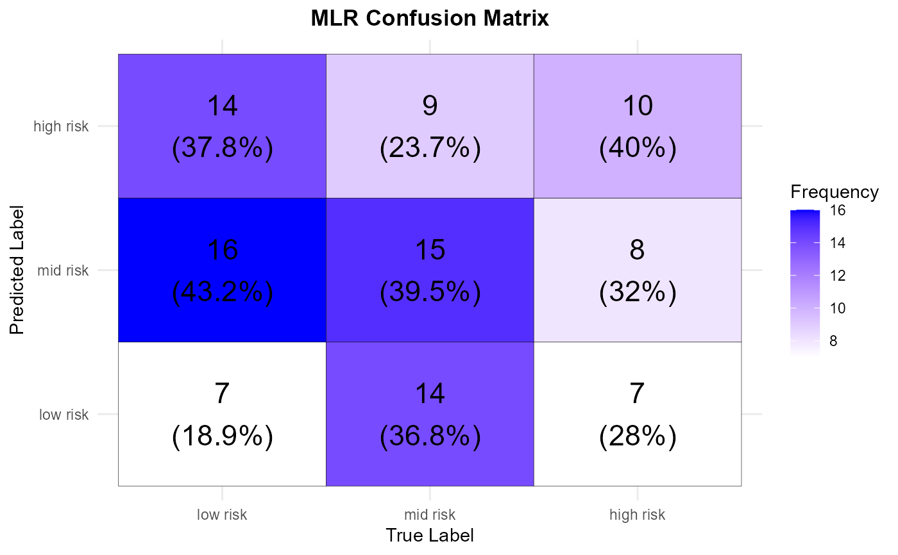

visualization.RdCreates and predicted probability, confusion matrices or random forest feature importance plots
visualization(plot_type, input, conf_type, output_dir)Character string specifying the type of plot to generate. Must be one of:
"conf_matrix" for confusion matrix visualization
"feature_importance" for feature importance plot
"pred_prob" for predicted probabilities plot
The input file for the visualization:
For "conf_matrix": A data frame containing the confusion matrix data with
columns True, Predicted, Frequency, and Percentage.
For "feature_importance": A trained model object (e.g., Random Forest model)
for extracting feature importance scores.
For "pred_prob": A data frame containing predicted probabilities with
columns BS (blood sugar levels) and Probability.
Character string specifying the confusion matrix type.
Required only if plot_type = "conf_matrix". Must be one of:
"baseline" for the Baseline Confusion Matrix
"mlr" for the MLR Confusion Matrix
"rf" for the Random Forest Confusion Matrix
If not using plot_type = "conf_matrix", then specify NULL
Character string specifying the directory path where the output plot will be saved. Ensure the directory exists.
saves the generated plot as a .png file in the specified output_dir.
helper_test_data <- tibble::tibble(
Age = sample(10:50, 100, replace = TRUE),
SystolicBP = sample(seq(70, 140, by = 10), 100, replace = TRUE),
DiastolicBP = sample(seq(50, 90, by = 10), 100, replace = TRUE),
BS = round(runif(100, 6.5, 13), 2),
BodyTemp = rep(98, 100) + rnorm(100, mean = 0, sd = 0.5),
HeartRate = sample(seq(70, 100, by = 2), 100, replace = TRUE),
RiskLevel = sample(c("low risk", "mid risk", "high risk"), 100, replace = TRUE)
) %>%
dplyr::mutate(RiskLevel = factor(RiskLevel, levels = c("low risk", "mid risk", "high risk"))) %>%
dplyr::mutate(RiskLevel = stats::relevel(RiskLevel, ref = "low risk"))
generate_probs <- function(n) {
probs <- matrix(runif(n * 3), nrow = n)
probs <- probs / rowSums(probs) # Normalize to ensure they sum to 1
as.data.frame(probs)
}
helper_data_conf_pred <- tibble::tibble(
ID = 1:100,
Predicted_Class = sample(c("low risk", "mid risk", "high risk"), 100, replace = TRUE),
`low risk` = generate_probs(100)[, 1],
`mid risk` = generate_probs(100)[, 2],
`high risk` = generate_probs(100)[, 3]
)
helper_data_conf_pred <- helper_data_conf_pred %>%
dplyr::rowwise() %>%
dplyr::mutate(
Total = sum(`low risk`, `mid risk`, `high risk`)
) %>%
dplyr::mutate(dplyr::across(`low risk`:`high risk`, ~ ./Total)) %>%
dplyr::select(-Total)
helper_conf_matrix <- caret::confusionMatrix(
as.factor(helper_data_conf_pred$Predicted_Class),
as.factor(helper_test_data$RiskLevel))
#> Warning: Levels are not in the same order for reference and data. Refactoring data to match.
helper_conf_table <- as.data.frame(helper_conf_matrix$table)
colnames(helper_conf_table) <- c("True", "Predicted", "Frequency")
helper_conf_table <- helper_conf_table %>%
dplyr::mutate(True = factor(True, levels = c("low risk", "mid risk", "high risk")),
Predicted = factor(Predicted, levels = c("low risk", "mid risk", "high risk"))) %>%
dplyr::group_by(True) %>%
dplyr::mutate(Percentage = ifelse(is.na(Frequency), 0,
round((Frequency / sum(Frequency)) * 100, 1)))
visualization("conf_matrix", helper_conf_table, "mlr", tempdir())
